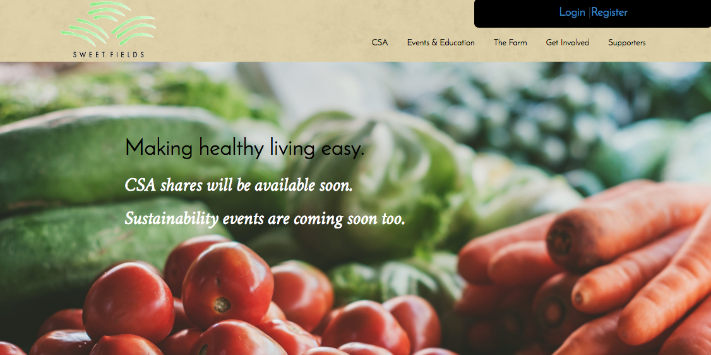

A portfolio that displays my web development skills.
This is a simple site that I custom-coded using the Bootstrap framework. It's completely repsonsive and has a parallax effect. I am a coder not an artist - this site is for demonstrating coding skills. I did not have influence on the design of the other sites.
I've been working on remote teams for the past several years and have experience using Slack, Asana, and Trello. I'm an excellent communicator.
Sweet Fields
An organic farm and sustainabiltiy center serving the suburbs of Philadelphia.
I made a custom responsive WordPress theme from scratch, as well as a custom plugin from scratch to personalize the login process for this site. I also customized the code for the plugin CiviCRM, which is used to manage contacts, accept donations, and track event registrations.

I use Gimp daily and know how to use Photoshop. I'm used to receiving Photoshop files form a designer to re-create on the web with pixel perfection. I've also been dabbling with Ruby on Rails and AngularJS. Examples of these to come soon.
The best cuts from an Italian barber with over 40 years of experience
This is a simple site that I custom-coded using the bootstrap framework. It's completely repsonsive.
This Website
My portfolio of sites that display my web development skills.
This is a simple site that I custom-coded using the Bootstrap framework. It's completely repsonsive and has a parallax effect. I am a coder not an artist - this site is for demonstrating coding skills. I did not have influence on the design of the other sites.
I've been working on remote teams for the past several years and have experience using Slack, Asana, and Trello. I'm an excellent communicator.
Sweet Fields
An organic farm and sustainabiltiy center serving the suburbs of Philadelphia.
I made a custom responsive WordPress theme from scratch, as well as a custom plugin from scratch to personalize the login process for this site. I also customized the code for the plugin CiviCRM, which is used to manage contacts, accept donations, and track event registrations.
I use Gimp daily and know how to use Photoshop. I'm used to receiving Photoshop files form a designer to re-create on the web with pixel perfection. I've also been dabbling with Ruby on Rails and AngularJS. Examples of these to come soon.
Pat's Hair Styling
The best cuts from an Italian barber with over 40 years of experience
This is a simple site that I custom-coded using the bootstrap framework. It's completely repsonsive.